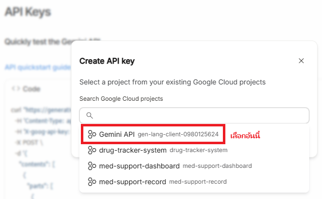

Let's Get The Key (Part 2/2)
ขั้นตอนการขอ API Key
สร้างและคัดลอก Key
คลิกปุ่ม "Create API key in new project" จากนั้นคัดลอก Key ที่ปรากฏขึ้นมาเก็บไว้ให้ดี
ข้อควรระวัง:
API Key นี้เป็นความลับ
ห้ามเปิดเผยหรือส่งให้ผู้อื่นเด็ดขาด!
